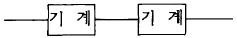
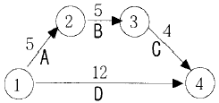

건설안전산업기사 (2003-05-25 기출문제)
1과목: 산업안전관리론
1. 안전표지에 사용하는 색채 가운데 비상구 및 피난소, 사람 또는 차량의 통행표지에 사용하는 색채는 다음 중 어느 것인가?
- 빨강
- 노랑
- 녹색
- 파랑
(정답률: 92%)

2. 무재해 운동의 추진을 위한 3요소에 속하지 않는 것은?
- 작업조건의 기술적 개선
- 톱(top)의 엄격한 안전경영자세
- 안전활동의 라인(Line)화
- 직장 자주안전활동의 활성화
(정답률: 53%)
3. 다음은 사업장에서의 교육훈련의 직접목적에 대한 설명이다. 이에 해당되지 않는 것은?
- 인재육성
- 기업의 계속 유지 발전
- 능률향상
- 인간완성
(정답률: 28%)
4. 안전교육 학습지도법의 단계 중 그 순서가 옳게 나열된 것은?
- 준비 ― 교시 ― 연합 ― 총괄 ― 응용
- 준비 ― 연합 ― 교시 ― 응용 ― 총괄
- 총괄 ― 연합 ― 교시 ― 응용 ― 준비
- 응용 ― 준비 ― 연합 ― 총괄 ― 교시
(정답률: 72%)
5. STOP 기법의 설명으로 옳은 것은?
- 안전교육의 추진방법
- 관리감독자 안전관찰 훈련
- 위험예지 훈련
- 교육훈련의 평가방법
(정답률: 48%)
6. 안전교육방법 중 실연법의 설명으로 맞는 것은?
- 시설유지비가 적게든다.
- 학생들의 참여가 제약된다.
- 학생들의 사회성이 결여되기 쉽다.
- 다른 방법보다 교사 대 학습자수의 비율이 높다.
(정답률: 52%)
7. 안전대 부품의 재료로 적당하지 않은 것은?
- 나일론
- 마
- 폴리에스테르
- 비닐론
(정답률: 31%)
8. 다음 중 안전관리 조직에 해당되지 않는 것은?
- 직렬조직
- 참모식조직
- 수평조직
- 직렬 및 참모식조직
(정답률: 89%)
9. 맥그리거(McGregor)의 Y이론과 관계가 없는 것은?
- 직무확장
- 인간관계 관리방식
- 권위주의적 리더쉽
- 책임감과 창조력 있음
(정답률: 60%)
10. Line-Staff의 형식을 가진 안전조직에서 현장의 상태가 안전기준에서 벗어났는가의 여부를 효과적으로 확인할 수 있는 부서는?
- Line
- Staff
- 안전보건 관리책임자
- 안전보건 대행기관
(정답률: 13%)
11. 다음 중 안전관리자의 직무가 아닌 것은?
- 산업재해 발생원인조사 및 대책수립
- 산업재해 보고 및 응급조치
- 안전교육계획 수립 및 실시
- 안전에 관련된 보호구의 구입시 적격품 선정
(정답률: 29%)
12. 슈퍼(Super)의 역할이론 중 역할연기를 올바르게 설명한 것은?
- 인간을 사물에 적응시키는 능력이다.
- 자아탐색인 동시에 자아실현의 수단이다.
- 개인의 역할을 기대하고 감수하는 수단이다.
- 다른 역할을 해내기 위해 다른 일을 구할 때도 있다.
(정답률: 31%)
13. 도수율 13.0, 강도율 1.20의 사업장이 있다. 환산도수율은?
- 1.3회
- 3.1회
- 13.0회
- 17.2회
(정답률: 46%)
14. 어느 사업장에서 당해년도에 330명의 재해자가 발생하였다. 무상해 사고는 몇 명인가? (단, 하인리히의 법칙을 적용.)
- 29명
- 30명
- 300명
- 329명
(정답률: 56%)
15. 하인리히(H.W.Heinrich)의 안전사고 연쇄성 이론의 5대 요소 중 가장 문제가 되는 것은?
- 사회적 환경결함
- 불안전한 행위 및 상태
- 개인결함
- 안전사고와 재해
(정답률: 67%)
16. 피로에 영향을 주는 기계측의 인자가 아닌 것은?
- 기계의 색
- 기계의 중량
- 기계의 종류
- 조작부분의 배치
(정답률: 53%)
17. 학습의 전이에 영향을 주는 조건과 관련이 없는 것은?
- 학습자의 지능 요인
- 학습정도의 요인
- 학습자의 태도 요인
- 학습장소의 요인
(정답률: 78%)
18. 작업태도 분석에 의한 동기 파악방법의 연구과정은?
- 요인→ 태도→ 결과
- 태도→ 결과→ 요인
- 결과→ 요인→ 태도
- 태도→ 요인→ 결과
(정답률: 42%)
19. 다음 중 바이오리듬의 설명 중 맞는 것은?
- 체온은 주간에 상승, 야간에 감소한다.
- 혈액의 수분량은 주간에 증가, 야간에 감소한다.
- 피로의 자각증상은 주간에 증가, 야간에 감소한다.
- 체중은 주간에 감소, 야간에 증가한다.
(정답률: 36%)
20. 안전사고의 관리적 원인 중 기술적 원인에 해당되지 않는 것은?
- 인원배치 부적당
- 점검, 정비보존 불량
- 생산공정의 부적당
- 구조, 재료의 부적합
(정답률: 61%)
2과목: 인간공학 및 시스템안전공학
21. 작업장의 소음을 통제하는 일반적인 방법과 거리가 먼 것은?
- 소음의 격리
- 소음원 통제
- 자동화 설비로 교체
- 차폐장치 및 흡음재 사용
(정답률: 73%)
22. 체계(system)의 특성이 아닌 것은?
- 집합성
- 관련성
- 목적추구성
- 환경독립성
(정답률: 75%)
23. 바닥의 추천 반사율은?
- 10% - 30%
- 20% - 40%
- 30% - 50%
- 40% - 60%
(정답률: 37%)
24. 기계의 통제장치 형태 중 개폐에 의한 통제장치는?
- 노브(Knob)
- 토글 스위치(Toggle switch)
- 레버(Lever)
- 크랭크(Crank)
(정답률: 47%)
25. 평균고장시간(MTTF)이 6x105시간인 요소 3개가 직렬계를 이루었을 때의 계(system)의 수명은?
- 2x105시간
- 3x105시간
- 9x105시간
- 18x105시간
(정답률: 43%)
26. 시스템 고장의 치명도를 분석하는 치명도분석(criticality analysis)는 구성부품의 고장형태 및 발생확률로부터 치명도지수(criticality number)를 계산한다. 다음중 시간당 또는 사이클당의 통상 고장률을 나타내는 기호는?
- α
- KE
- KA
- λ G
(정답률: 29%)
27. 시스템의 구상단계에서 시스템 고유의 위험 상태를 식별하고 예상되는 재해의 위험 수준을 결정하는 시스템 안전 분석 기법은?
- FTA
- PHA
- FMEA
- ETA
(정답률: 47%)
28. 작업설계를 함에 있어서 작업 만족도를 얻기 위한 수단이 아닌 것은?
- 작업순환
- 작업분석
- 작업 윤택화
- 작업확대
(정답률: 25%)
29. 다음 조도를 나타낸 공식이다. 알맞는 것은?
- 광도 ÷ 거리
- (광도)2÷ 거리
- (거리)2÷ 거리
- 광도 ÷ (거리)2
(정답률: 76%)
30. 다음과 같은 시스템의 신뢰도를 구하면? (단, 기계의 신뢰도는 0.99이다.)

- 0.9999
- 0.9801
- 1.98
- 0.9701
(정답률: 48%)
31. 다음 중 진동의 영향을 가장 많이 받는 인간 성능은?
- 추적(tracking) 작업
- 감시(monitoring) 작업
- 반응시간
- 형태식별(pattern recognition)
(정답률: 25%)
32. 기계가 갖고 있는 제한점이 아닌 것은?
- 기계는 융통적이지 못하다.
- 기계는 임기응변을 하지 못한다.
- 기계는 물리적 힘을 빠르고 지속적으로 적용하지 못한다.
- 기계는 과거의 경험으로부터 아무런 도움을 얻지 못한다.
(정답률: 82%)
33. 시간-동작연구에 대한 비판으로 맞지 않는 것은?
- 생산량을 저하시키는 방법이다.
- 개인차를 고려하지 못한다.
- 부적절한 표집을 사용한 연구이다.
- 비교적 단순하고 반복적인 직무에만 적절하다.
(정답률: 56%)
34. FMEA 실시를 위한 기본방침의 결정에 있어서 분명하게 해둘 필요가 없는 것은?
- 시스템 운용단계
- 환경 stress 나 동작 stress의 한계 부여
- 시스템의 software 구성요소의 고장 원인
- 시스템 임무의 기본적 목적
(정답률: 24%)
35. 인간의 눈은 모든 빛을 동일하게 받아들이는 것 같아 보이지만 실제로는 그렇지 않다. 다음 중 인식범위가 가장 넓은 색상은?
- 백색
- 청색
- 적색
- 녹색
(정답률: 58%)
36. 정보를 음성적으로 의사소통 하는 것이 효과적일 때는 어떤 경우인가?
- 정보가 어렵고 추상적일 때
- 여러종류의 정보를 동시에 제시해야 할 때
- 정보가 긴급할 때(빨리제시)
- 정보의 영구적인 기록이 필요할 때
(정답률: 65%)
37. 어떤 기기의 고장율은 0.002/시간으로 일정하다고 할 때 이 기기를 100시간 사용했을 때의 불신뢰도는?
- 0.0020
- 0.1645
- 0.0998
- 0.1813
(정답률: 17%)
38. 체계가 감지, 정보보관, 정보처리 및 의식결정, 행동을 포함한 모든 임무를 수행하는 체계는 다음 중 어느 체계인가?
- 수동체계
- 기계화 체계
- 자동체계
- 반자동 체계
(정답률: 47%)
39. 작업자의 요구나 관심이 한 가지에 집중되는 의식우회의 문제를 지닌 작업자에 대한 감독자의 적절한 조치는?
- 규제
- 통제
- 카운셀링(counseling)
- 처벌
(정답률: 43%)
40. 인간은 계속되는 소음에 장시간 노출되는 경우 청력을 손실하며 소음의 강도와 노출 허용시간은 반비례 하는 것이 일반적이다. 예를 들어 130dB 의 소음은 약 10초가 한계인데 8시간 작업시의 허용소음 기준치는?
- 80dB
- 90dB
- 100dB
- 110dB
(정답률: 39%)
3과목: 건설시공학
41. 건설공사 준비로서 시공업자가 가장 먼저 고려해야 할 것은?
- 건설대지의 조성
- 가설물의 건설
- 기계공구 및 건설장비의 정비
- 현장원의 편성
(정답률: 45%)
42. 기초공사를 하기 위하여 땅을 파는 일을 기초파기 또는 흙파기라 하는데, 흙파기 모양에 따라 구분한 용어가 아닌 것은?
- 구덩이파기 (pit excavation)
- 줄기초파기 (trenching)
- 온통기초파기 (overall excavation)
- 톱다운 공법 (top-down method)
(정답률: 74%)
43. 프리캐스트 철근 콘크리트 공사에 대한 설명중 틀린것은?
- 콘크리트의 슬럼프는 15cm 이하로 한다.
- 단위 시멘트량의 최소값은 300kg/m3으로 한다.
- 물시멘트비는 60% 이하로 한다.
- 콘크리트에 함유되는 염화물량은 염소이온량으로써 0.5kg/m3 이하로 한다.
(정답률: 42%)
44. 콘크리트용 부순 굵은골재의 입형판정실적률은 얼마 이상이어야 하는가?
- 45%
- 50%
- 55%
- 60%
(정답률: 16%)
45. 건축공사표준시방서 내용 중 보통콘크리트에서 내구성을 확보하기 위한 재료 및 배합에 관한 규정에서 1m3의 콘크리트 중에 포함되는 단위수량은 얼마 이하로 하는가?
- 175kg
- 180kg
- 185kg
- 190kg
(정답률: 24%)
46. 철골 세우기용 장비 중 수평이동이 용이하고 건물의 층수가 적은 긴 평면일 때 또는 당김줄을 마음대로 맬 수 없을 때 가장 유리한 장비는?
- 스티프레그데릭
- 진폴
- 가이데릭
- 트럭크레인
(정답률: 27%)
47. 공정계획 및 관리에 있어 작업의 집약화와 관계가 가장 적은 것은?
- 부분공사로서 이미 자료화되어 있는 작업군
- 투입되는 자원의 종류가 다른 작업군
- 관리외의 작업군
- 현시점에서 관리상의 중요도가 적은 작업군
(정답률: 28%)
48. 주로 바닥판 슬래브, 보 및 계단거푸집을 설계할 때 고려하여야 할 연직방향 하중으로 거리가 가장 먼 것은?
- 콘크리트의 자중
- 거푸집의 자중
- 충격하중
- 작업하중
(정답률: 27%)
49. 포졸란(pozzolan)을 사용한 콘크리트의 특징으로 옳지 않은 것은?
- 블리딩 및 재료분리가 감소된다.
- 강도 증진이 늦어지므로 장기 강도가 낮아진다.
- 해수 등에 화학적 저항성이 크다.
- 수밀성이 크다.
(정답률: 48%)
50. 지반의 토질시험 중에서 무게 63.5 kg의 추를 76cm 높이에서 낙하시켜 샘플러가 30cm 관입되는 저항치를 측정하는 시험을 무엇이라 하는가?
- 보링시험
- 히빙시험
- 표준관입시험
- 베인시험
(정답률: 90%)
51. 지반조사과정에서 지내력시험을 하는 가장 큰 이유는?
- 말뚝의 종류를 결정하기 위해서
- 가장 적합한 기초구조를 결정하기 위해서
- 건물의 부동침하를 방지하기 위해서
- 지층의 상태를 측정하기 위해서
(정답률: 32%)
52. 수직굴착, 수중굴착 등 일반적으로 협소한 장소의 깊은 굴착에 적합한 것으로 자갈 등의 적재에도 사용하는 토공장비는?
- 클램셸
- 드래그라인
- 파워쇼벨
- 드래그쇼벨
(정답률: 89%)
53. D작업의 Total Float(총여유시간)은 얼마인가?

- 1
- 2
- 3
- 4
(정답률: 50%)
54. 기초 말뚝박기 공사에서 말뚝간격의 최소 한도는? (단, d는 말뚝의 직경이다.)
- 2.5d
- 3d
- 4d
- 6d
(정답률: 50%)
55. 방사성차폐를 목적으로 사용하는 콘크리트는?
- 경량콘크리트
- 중량콘크리트
- 매스콘크리트
- 팽창콘크리트
(정답률: 36%)
56. 기존 건물에 근접하여 구조물을 구축할 때 기존건물의 균열 및 파괴를 방지할 목적으로 지하에 실시하는 보강공법은?
- 베노토 공법
- BH(Boring Hole)공법
- 심초공법
- 언더피닝(Under Pinning)공법
(정답률: 57%)
57. 다음 철골조에 관한 설명에서 가장 거리가 먼 것은?
- 정밀한 가공을 요한다.
- 내화적이다.
- 철근콘크리트조에 비해 경량이다.
- 고층 및 대규모 건물에 적합하다.
(정답률: 35%)
58. 발주자와 수급자의 상호신뢰를 바탕으로 팀을 구성하여 프로젝트의 성공과 상호이익 확보를 위하여 공동으로 프로젝트를 집행관리하는 공사계약 방식은?
- BOT 방식
- 파트너링 방식
- CM 방식
- 공동도급 방식
(정답률: 66%)
59. 다음 중 피어(pier)기초 공사와 관계가 없는 것은?
- 트레미(Tremi)관
- 케이싱(Casing)관
- 벤토나이트(Bentonite)액
- 디젤햄머(Diesel hammer)
(정답률: 58%)
60. 철골공사에서 홈을 파기 위한 목적으로 한 화구(火口)로서 산소아세틸렌 불꽃을 이용하여 녹여 깎은 재의 뒷부분을 깨끗이 깎는 것의 명칭은?
- 가스가우징(gas gouging)
- 크레이터(crater)
- 플럭스(flux)
- 위빙(weaving)
(정답률: 82%)
4과목: 건설재료학
61. 미장용 석고 플라스터의 특징을 바르게 설명한 것은?
- 초기에 경화반응이 느리다.
- 공기중의 탄산가스와 반응 경화한다.
- 경화와 함께 팽창하기 때문에, 균열의 발생이 크다.
- 가열하면 결정수를 방출하여 온도상승을 억제하기 때문에 내화성이 있다.
(정답률: 48%)
62. 철근콘크리트에 사용되는 모래는 일반적으로 염분함유량이 중량비로 얼마 이하이어야 하는가?
- 0.01%
- 0.04%
- 0.1%
- 0.5%
(정답률: 13%)
63. 점토의 일반적 성질 중 틀린 것은 어느 것인가?
- 건조수축, 소성변형이 크다.
- 점토의 압축강도는 인장강도의 약 5배이다.
- 좋은 점토일수록 가소성이 작다.
- 흡수량은 내부의 공극률에 관계된다.
(정답률: 41%)
64. 알루미늄의 성질에 관한 설명 중 옳지 않은 것은?
- 철(Fe)에 비해 융점이 낮다.
- 동(Cu)보다 전기전도성이 작다.
- 알칼리나 해수로 인해 부식된다.
- 반사율이 낮아 태양열의 차단효과는 없다.
(정답률: 37%)
65. A.E콘크리트에 대한 설명으로 옳지 않은 것은?
- 공기량이 많을수록 슬럼프는 증대한다.
- 염분 및 동결융해에 대한 저항성이 감소된다.
- 콘크리트의 재료분리, 블리딩이 감소된다.
- 콘크리트의 물시멘트비가 일정한 경우 공기량을 증가시키면 압축강도는 저하된다.
(정답률: 47%)
66. 유리섬유로 보강하여 FRP(Fiber Reinforced Plastics)를 만드는데 이용되는 수지는?
- 폴리염화비닐수지
- 폴리카보네이트
- 폴리에틸렌수지
- 불포화 폴리에스테르수지
(정답률: 46%)
67. 스테인리스강에 대한 설명중 가장 옳지 않은 것은?
- 스테인리스강은 탄소량이 많을수록 내식성이 커진다.
- 대기 중이나 물 속에서 녹슬지 않는다.
- 벽체의 마감재, 조리대, 전기기구, 장식철물 등에 사용된다.
- 탄소강에 크롬, 니켈 등을 포함시킨 합금(특수강)이다.
(정답률: 43%)
68. 연강의 인장시험에서 탄성에서 소성으로 변하는 경계는?
- 비례한도
- 변형경화
- 항복점
- 파단점
(정답률: 53%)
69. 콘크리트에 대한 설명중 옳지 않은 것은?
- 골재의 공극율이 적을수록 콘크리트의 팽창 수축이 적다.
- 콘크리트의 강도는 물시멘트비에 의해 크게 좌우된다
- 워커빌리티는 굳지 않은 콘크리트의 성능평가에 관한 용어로 작업의 난이도를 총칭한다.
- 콘크리트는 약한 산성을 가진 재료이다.
(정답률: 25%)
70. 다음은 일반적인 석재에 관한 설명이다. 옳지 않은 것은?
- 석재는 압축 및 인장강도가 우수하고, 내구성 및 내화학성이 크다.
- 같은 종류라도 산지에 따라 강도 및 색조의 차이가 발생한다.
- 화강암은 화염에 노출되면 균열이 발생할 우려가 있다.
- 일반적으로 가공이 어려워 시공비가 비싸다.
(정답률: 28%)
71. 절건상태의 비중(r)이 0.75인 목재의 공극률(공간율)은?
- 약 48.7%
- 약 75.0%
- 약 25.0%
- 약 51.3%
(정답률: 40%)
72. 내화벽돌은 S.K. 몇번부터 해당되는가?
- 12
- 18
- 21
- 26
(정답률: 34%)
73. [2치 잼 1자 잼 3자] 되는 목재는 몇 재(才)인가?
- 0.5재
- 1재
- 5재
- 6재
(정답률: 35%)
74. 플라이 애시(flyash)를 시멘트에 혼합하였을 때의 효과로 틀린 것은?
- 수밀성이 증대된다.
- 저알칼리시멘트의 효과를 나타낸다.
- 워커빌리티(workability)가 좋아진다.
- 초기강도는 증가하지만 장기강도는 감소된다.
(정답률: 54%)
75. 풍화된 시멘트를 사용했을 때의 설명중 옳지 않은 것은?
- 응결이 늦어진다.
- 수화열이 증가한다.
- 비중이 작아진다.
- 강도가 감소된다.
(정답률: 45%)
76. 스트레이트 아스팔트(S.A)와 블라운 아스팔트(B.A)의 여러 성질상의 대소를 비교한 것중 틀리는 것은?
- 연화점 : S.A ＜ B.A
- 교착력 : S.A ＞ B.A
- 신도 : S.A ＞ B.A
- 감온비 : S.A ＜ B.A
(정답률: 30%)
77. 합성수지에 관한 일반적인 설명 중 올바른 것은?
- 내열, 내화성이 우수하여 500℃이상에서 견딜 수 있다.
- 일반적으로 투명 또는 백색계통으로 안료 첨가시 착색이 가능하다.
- 마모가 크고, 탄력성이 적기 때문에 바닥재료에 부적합하다.
- 경량이며 강도가 크고 변형이 적기 때문에 구조재료로 유리하다.
(정답률: 40%)
78. 다음 파티클 보드(particle board)에 대한 설명 중 적당치 않은 것은?
- 강도는 섬유의 방향에 따라 차이가 크다.
- 경질 파티클보오드는 변형이 적다.
- 내력적으로 사용하는데 적당하며 상판, 칸막이벽, 가구등에 이용된다.
- 경량 파티클 보드는 흡음성, 열차단성이 크다.
(정답률: 32%)
79. 다음의 인조석 및 석재가공제품에 대한 설명 중 틀린 것은?
- 테라죠는 대리석, 사문암등의 종석을 백색시멘트나 수지로 결합시키고 가공하여 생산한다.
- 에보나이트는 주로 가구용 테이블 상판, 실내벽면 등에 사용된다.
- 패블스톤은 조약돌의 질감을 내지만 백화현상의 우려가 있다.
- 초경량 스톤패널은 로비(lobby) 및 엘리베이터의 내외장재로 사용된다.
(정답률: 65%)
80. 물을 사용하는 부위에 적합한 미장재료는?
- 시멘트
- 소석회
- 돌로마이트 플라스터
- 석고 플라스터
(정답률: 32%)
5과목: 건설안전기술
81. 건설 공사중 임시분전반의 안전조치 불량으로 감전 재해가 발생하면 중대 재해로 이어질 수 있다. 다음 중 임시분전반의 안전 조치 사항으로 틀린 것은?
- 전기사용장소에는 임시 분전반을 설치하여 반드시 콘센트에서 플러그로 전원을 인출해야 한다.
- 분기회로에는 감전보호용 지락만 설치하면 누전차단기는 설치하지 않아도 된다.
- 충전부가 노출되지 않도록 내부보호판을 설치하고 콘센트에 100V, 220V 등의 전압을 표시해야 한다.
- 철재분전함의 외함은 반드시 접지 시켜야 한다.
(정답률: 64%)
82. 가설공사에서 동력을 사용할 때의 기술 중 틀린 것은?
- 동력은 전동기 또는 내연기관이 많이 쓰인다.
- 전력에 관한 사항은 전력회사 방침에 따라야 한다.
- 동력을 사용할 때는 변압기, 변전실, 배전반 등을 전문업자의 시공으로 설비해야 한다.
- 전력은 임시 가설이므로 현장원이 가설할 수 있다.
(정답률: 52%)
83. 달비계의 최대적재하중을 정함에 있어 안전계수로 틀린것은?
- 달기와이어로프 및 달기강선의 안전계수는 7이상
- 달기체인 및 달기후크의 안전계수는 5이상
- 달기강대와 달비계의 하부 및 상부지점의 안전계수는 강재의 경우 2.5이상
- 달기강대와 달비계의 하부 및 상부지점의 안전계수는 목재의 경우 5이상
(정답률: 39%)
84. 다음 나열된 내용은 강관비계의 조립시 안전지침이다. 이중 잘못된 것은?
- 비계기둥의 간격은 보 방향에서 2m, 장선 방향에서 2m 이상이어야 한다.
- 지상에서 첫 번째 띠장의 높이는 2m 이하의 위치에 설치해야 한다.
- 비계기둥간의 적재하중은 400kg을 초과하지 않도록 해야 한다.
- 벽면과의 연결은 수직 5m, 수평 5m 이내마다 견고하게 설치해야 한다.
(정답률: 32%)
85. 높이 2m인 거푸집에서 콘크리트 측압은 얼마인가? (단, 콘크리트 단위중량=2.4tonf/m3)
- 2.4tonf/m2
- 4.8tonf/m2
- 9.6tonf/m2
- 12.5tonf/m2
(정답률: 58%)
86. 이동식 비계를 조립하여 작업할 때 준수 사항으로 틀린것은?
- 최대 적재하중 명시
- 승강용 사다리를 견고하게 설치
- 이동을 방지하기 위한 제동장치 생략 가능
- 비계의 최상부 작업시 표준안전난간대 설치
(정답률: 83%)
87. 다음중 굴착기의 전부장치의 구성 종류가 아닌 것은?
- 붐(Boom)
- 암(Arm)
- 버킷(Bucket)
- 블레이드(Blade)
(정답률: 42%)
88. 옹벽의 안정기준에서 활동에 대하여 안전하기 위하여서는 활동에 대한 저항력이 수평력보다 몇 배 이상되어야 하는 가?
- 1.0배
- 1.5배
- 2.0배
- 3.0배
(정답률: 48%)
89. 거푸집 해체 작업시의 안전수칙과 거리가 먼 것은?
- 거푸집지보공을 해체할 때는 작업책임자를 선임한다.
- 해체된 거푸집 재료를 올리거나 내릴 때는 달줄이나 달포대를 사용한다.
- 보 밑 또는 슬라브 거푸집을 해체 할 때는 동시에 해체하여야 한다.
- 거푸집의 해체가 곤란한 경우 구조체에 무리한 충격이나 지렛대 사용은 금하여야 한다.
(정답률: 40%)
90. 굴착공사에 사용되는 흙막이공법의 종류와 거리가 먼 것은?
- 어스앵카공법
- 자립흙막이공법
- 아일랜드공법
- 자연사면굴착공법
(정답률: 39%)
91. 콘크리트가 분리되는 일이 없이 거푸집속에 쉽게 타설할 수 있는 정도를 나타내는 것은?
- workability
- bleeding
- consistency
- filtration
(정답률: 52%)
92. 흙의 안식각은 어느각을 말하는가?
- 자연경사각
- 비탈면각
- 시공경사각
- 계획경사각
(정답률: 32%)
93. 철골 건립작업을 중지하여야 할 강풍의 기준사항은?
- 1분간 평균 풍속이 10m/s 이상
- 10분간 평균 풍속이 10m/s 이상
- 1분간 평균 풍속이 20m/s 이상
- 10분간 평균 풍속이 20m/s 이상
(정답률: 8%)
94. 이동식 사다리의 구조기준을 잘못 설명한 것은?
- 견고한 구조로 할 것
- 재료는 심한 손상, 부식 등이 없는 것으로 할 것
- 각부에서 미끄럼방지 장치 등 전위 방지조치를 할 것
- 폭은 60cm 이내로 할 것
(정답률: 48%)
95. 다음 중 항타기, 항발기의 권상용 와이어로우프로 사용 가능한 것은?
- 이음매가 있는 것
- 와이어로우프의 한 가닥에서 소선의 수가 8퍼센트 절단 된 것
- 지름의 감소가 공침지름의 8퍼센트 인 것
- 심하게 변형 또는 부식 등이 있는 것
(정답률: 56%)
96. 기존 건물에서 인접된 장소에서 새로운 깊은 기초를 시공하고자 한다. 이때 기존 건물의 기초가 얕아 안전상 보강하려고 할 때 적당한 것은?
- 압성토 공법
- 언더피닝 공법
- 선행 재하공법
- 치환공법
(정답률: 75%)
97. 흙막이 동바리를 설치할 때 붕괴 등의 위험방지를 위한 정기점검사항으로 틀린 것은?
- 침하의 정도
- 버팀대의 긴압의 정도
- 형상· 지질 및 지층의 상태
- 부재의 손상· 변형· 부식· 변위 및 탈락의 유무
(정답률: 47%)
98. 다음은 압밀에 대한 설명이다. 옳지 않은 것은?
- 압밀이란 흙의 간극 속에서 물이 배수됨으로써 오랜 시간에 걸쳐 압축되는 현상을 말한다.
- 압밀시험의 목적은 지반의 침하 속도와 침하량을 추정해서 설계 시공의 자료를 얻는 데 있다.
- 일반적으로 점토는 투수계수가 작아 압밀을 장시간에 걸쳐 일어나나, 간극비가 작아 침하량은 작다.
- 압밀이 완료되면 과잉간극수압(Ue)은 0 이 된다.
(정답률: 60%)
99. 철골구조물의 건립 순서를 계획할 때 일반적인 주의사항이 아닌 것은?
- 현장건립 순서와 공장제작 순서를 일치시킨다.
- 건립기계의 작업반경에 방해되지 않도록 한다.
- 건립 중 가볼트 체결은 가급적 많이 하여 안정을 기한다.
- 기둥은 2본 이상 세울 때는 반드시 계속하여 보를 설치한다.
(정답률: 46%)
100. 유해위험 방지계획서 작성 대상이 아닌 것은?
- 지상높이 31m 이상인 건축물 공사
- 제방높이 30m 이상인 댐 건설공사
- 최대지간길이 50m 이상인 교량공사
- 굴착깊이 10.5m 이상인 굴착공사
(정답률: 56%)